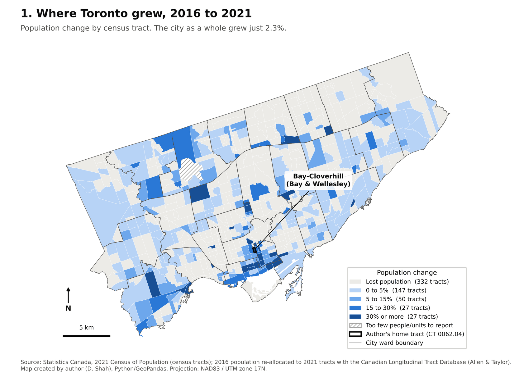
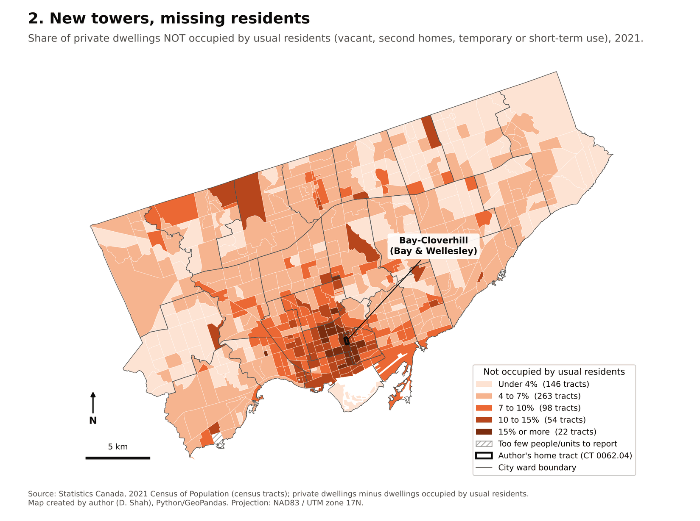
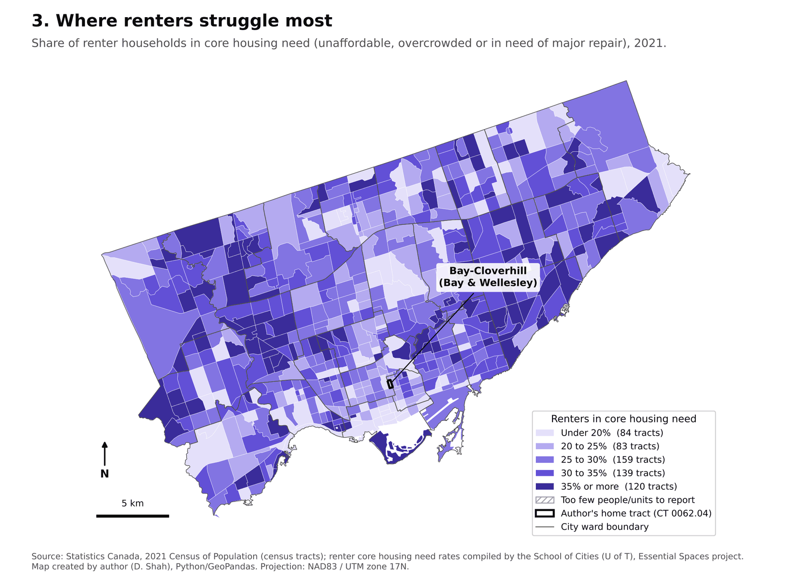
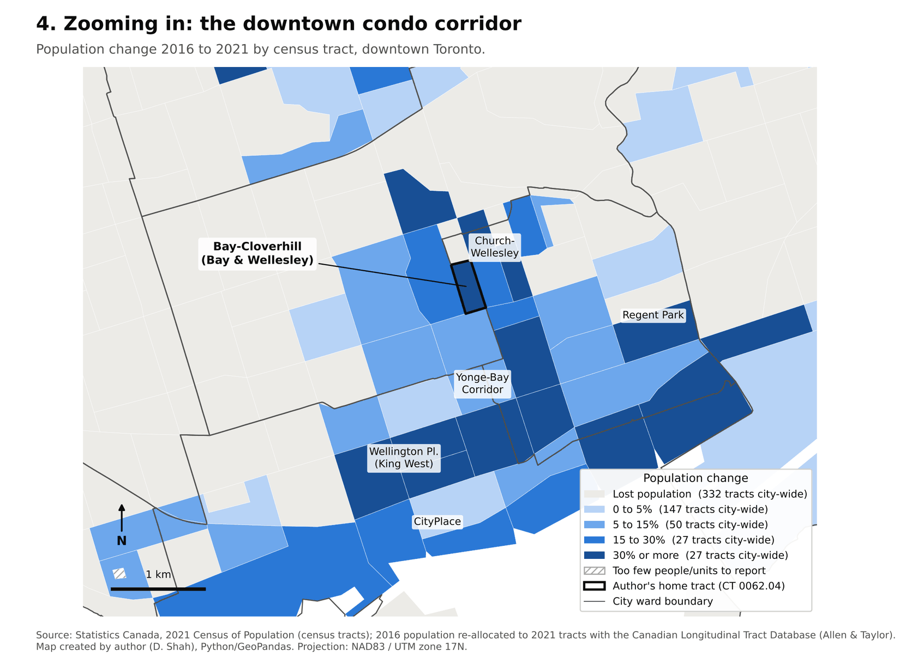
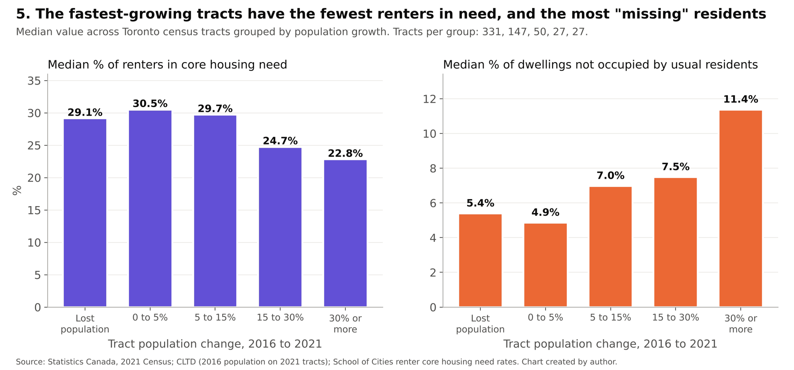
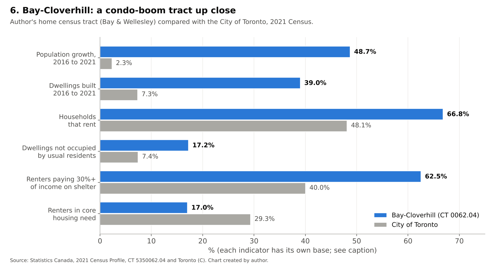

Toronto barely grew, except where the cranes were

Context
Toronto's population rose only 2.3% between the 2016 and 2021 censuses, and more than half of the city's 585 census tracts actually lost people. The last year of that period overlaps with the start of the pandemic, so some of the losses reflect temporary moves out of the city.
What the map shows
The dark blue tracts tell a different story. Downtown, the waterfront (CityPlace, East Bayfront, Humber Bay Shores) and suburban transit nodes such as Yonge-Eglinton, Yorkdale and Etobicoke City Centre grew by a third or more. These are the places where new condominium towers were completed during these years.
The 27 tracts that grew by 30% or more gained about 55,600 residents. That equals 88% of the whole city's net growth, on 2.6% of its land.
New towers, missing residents

Context
The census counts every private dwelling, and separately counts the ones where someone usually lives. The gap between the two includes units that were empty on census day, second homes or pied-à-terres, units used by temporary residents, and units rented out short-term. It is the best free, city-wide signal we have of homes that are built but not lived in full-time.
What the map shows
Across Toronto, 7.4% of dwellings were not occupied by usual residents. In the core the figure often passes 15%, and it is highest exactly where Map 1 shows the most growth. In the 27 fastest-growing tracts combined it is 13.5%, almost double the city rate.
A large slice of the condo boom is investor-owned or part-time housing. New supply downtown does not translate one-for-one into new homes for people who live here.
Renters struggle most far from the towers

Context
A household is in core housing need when its home is unaffordable (shelter costs of 30% or more of income), overcrowded, or needs major repairs, and it could not afford a suitable local alternative. City-wide, 29.3% of renter households were in core housing need in 2021.
What the map shows
The pattern almost flips Map 1. The deepest need is in the inner suburbs, in older rental apartment towers in places like Weston, Mount Dennis, Jane and Finch (Glenfield-Jane Heights), Thorncliffe Park and much of Scarborough. Downtown condo tracts are mostly lighter. One caution: student households are excluded from the core need measure, which lowers the rates around the universities.
The renters in the deepest housing need live in the parts of the city that the condo boom mostly skipped.
Zooming in: the downtown condo corridor

Context
Zoomed in, the growth forms a spine: from the waterfront, north along the Yonge and Bay corridors to Wellesley Street, plus King West and Regent Park, where the public housing redevelopment added mixed-income towers. These areas sit on Line 1 of the subway and are designated for growth (Downtown and Centres) in the City's Official Plan.
What the map shows
Even inside downtown, the change is sharply uneven. A few blocks away, five of the Annex's six tracts, full of Victorian houses, lost population, and Cabbagetown and Kensington-Chinatown barely changed. Growth was steered into a handful of tracts where towers are allowed, while low-rise neighbourhoods next door stayed closed to new housing.
Toronto's growth is not spread out; it is poured into a narrow corridor. That makes these few tracts a natural lab for asking who new housing serves.
The mismatch, in one chart

Context
To test what the maps suggest, I grouped all 582 tracts with reliable data by how fast they grew, then compared the typical (median) tract in each group. Medians are used so a few unusual tracts do not drive the result.
What the chart shows
In tracts that shrank or grew slowly, the typical rate of renter core need is about 30%. In tracts that grew 15% or more it drops to 23 to 25%, while the share of dwellings without usual residents more than doubles. The tract-level correlation is weak across the whole city (Spearman ρ = −0.06), so the difference is concentrated in the boom tracts, not a smooth city-wide trend.
Where Toronto built the most, renters were less likely to be in need and units were more likely to sit without a full-time resident.
Bay-Cloverhill: a condo-boom tract up close

Context
I live at Bay and Wellesley, in census tract 0062.04 (Bay-Cloverhill). Almost every home here (99%) is in an apartment building of five or more storeys, and 39% of the tract's dwellings were finished between 2016 and 2021. Its population jumped 48.7% in five years.
What the chart shows
Two-thirds of households rent, and 62.5% of renters spend 30% or more of their income on housing, well above the city's 40%. Median rent was $1,980 a month against $1,500 city-wide. Yet only 17% of renters count as in core housing need, because so many are students (who are excluded) or young professionals whose incomes are high enough to pass the test.
From the street, the boom looks like abundance. In the data, it is a neighbourhood of stretched renters paying premium rents, with one in six units not home to anyone full-time.
Explore it yourself
Switch between the three measures and hover or tap any census tract to see its numbers. The black outline is Bay-Cloverhill.
Map created by author (D3.js). Source: Statistics Canada, 2021 Census of Population; Canadian Longitudinal Tract Database (2016 population); School of Cities, University of Toronto (renter core housing need). Tracts with fewer than 100 residents (or 50 dwellings) are left blank.
What this means, and where the project goes next
- Growth is concentrated. Toronto's new housing went into a narrow set of tower-zoned tracts, while most of the city lost people.
- Supply is not the same as homes. In boom tracts, roughly one unit in seven or eight is not lived in by a usual resident, about twice the city rate.
- Need lives elsewhere. Renters in deep housing need are concentrated in inner-suburban rental towers, which saw little new construction.
- Even boom renters are stretched. In Bay-Cloverhill most renters pay 30% or more of income on rent, so new condos are not cheap housing for those who live in them.
For Assignment 3 I will move from describing this pattern to explaining it: modelling where new building permits and development applications go, using local demographics and built-environment characteristics (transit access, zoning, existing density) as predictors, and adding rental listing data to see who the new units actually house.